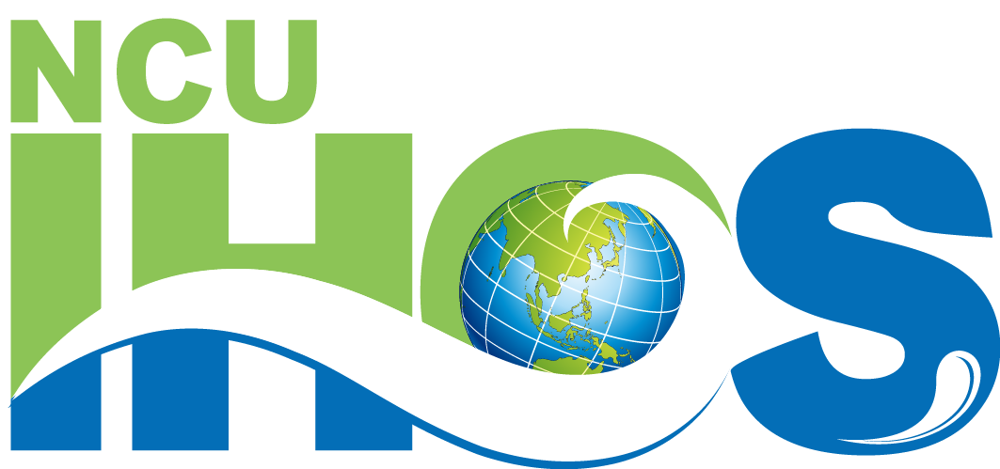
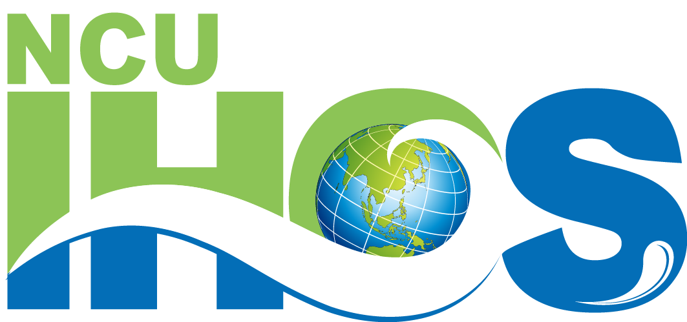

About the lab
Typhoons are among the most destructive natural hazards. About 30 form annually in the western North Pacific, posing major risk to East Asia. The lab uses multi-satellite remote sensing (SST, SSH, surface winds), in-situ ocean observations, and numerical models to study typhoon-ocean interaction and air-sea fluxes, and to assess how warming oceans alter energy supply, cyclone activity, and air-sea exchanges.
Affiliation
Graduate Institute of Hydrological and Oceanic Sciences, National Central University
 


Principal Investigator

Iam-Fei Pun
Associate Professor, Graduate Institute of Hydrological and Oceanic Sciences
Research areas include typhoon-ocean interaction, ocean thermal structure, air-sea fluxes, and marine heatwaves. Uses satellite remote sensing, field observations, and numerical models, with emphasis on applications to typhoon intensity forecasting and climate risk assessment.
Education
- Ph.D. Atmospheric Sciences, National Taiwan University (2012)
- M.Sc. Earth Sciences, National Taiwan Normal University (2005)
- B.Sc. Oceanography, National Taiwan Ocean University (2002)
Contact
- No. 300, Zhongda Rd., Zhongli District, Taoyuan, Taiwan
- Tel: 03-4227151 ext.65674
Contact form
We route messages internally to the lab.
Experience
- 2023/8-present: Chairman, Graduate Institute of Hydrological and Oceanic Sciences, NCU
- 2022/8-present: Associate Professor, NCU
- 2017/8-2021/7: Assistant Professor, NCU
- 2013/10-2017/7: Postdoctoral research fellow, NTU
- 2012/9-2013/8: Postdoctoral investigator, Woods Hole Oceanographic Institution